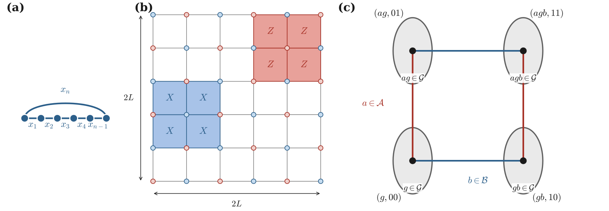
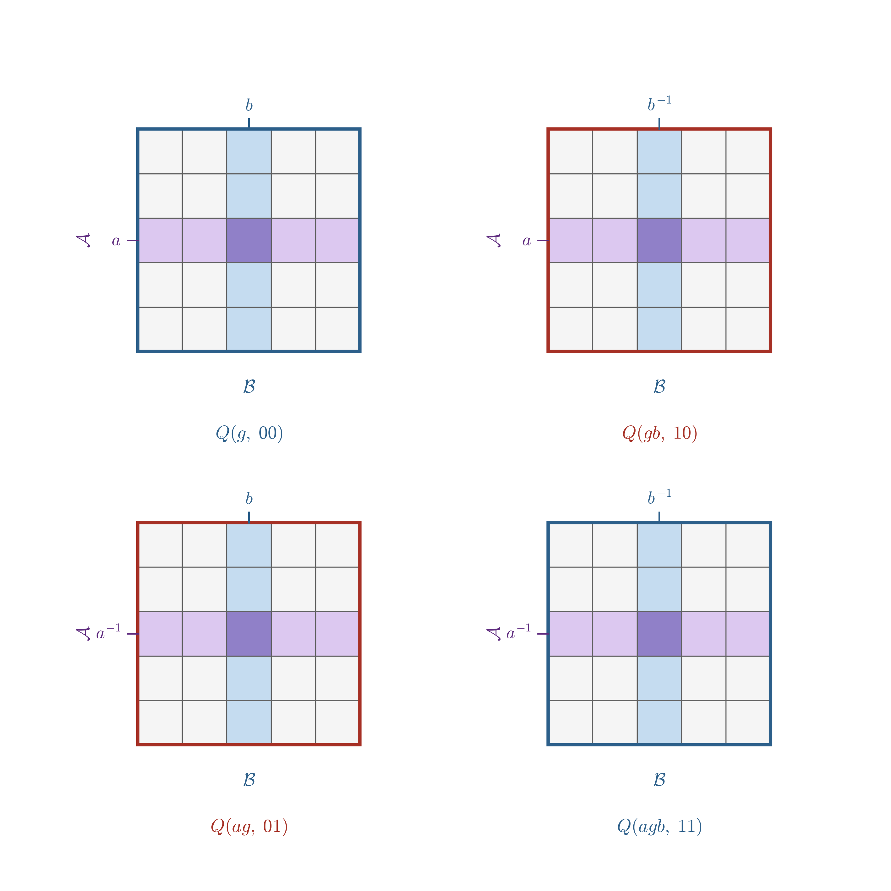

Quantum Tanner Codes
Quantum Tanner (QT) codes turn two small classical Tanner codes and a finite group into a much larger CSS quantum code. With suitable expansion assumptions of the underlying graphs, the blocklength, dimension, and distance all grow linearly while the stabilizer checks remain sparse (Leverrier and Zémor, Apr 2022).
This page introduces the construction. The central idea is:
Put qubits on the squares (a.k.a faces) of a combinatorial square complex. Around every vertex, those squares form a 2D grid. The product structure of the classical tensor codes specify the allowed $Z$- and $X$-generator support on that 2D grid.
QuantumExpanders.jl provides two related constructors:
QuantumTannerCodeimplements the original left-right Cayley complex (LRCC) description explained on this page. It is used to find the instances of codes in Appendix of (Mian et al., 2026).QuantumTannerViaLeftRightActionsimplements the lifted description used for the code searches in [mian2026quantum (@cite). It is covered in Quantum Tanner Codes via Left-Right Actions.
Why move from a graph to a square complex?
A classical Tanner code begins with a graph. A symbol is placed on each edge, and every vertex checks the symbols on its incident edges against a small local code. The graph supplies the global connectivity; the same small constraint is reused at every vertex.
For a CSS quantum code we need two families of checks, one of $X$ type and one of $Z$ type, and every $X$ check must commute with every $Z$ check. A square complex provides a useful two-dimensional analogue of the Tanner-graph picture:
- physical qubits are placed on squares rather than edges;
- a vertex sees all the squares that touch it;
- those incident squares are arranged as a small matrix; and
- neighboring vertices share one complete row or column of that matrix.
The row-or-column overlap is what makes the CSS commutation rule easy to enforce with a classical code and its dual.

A geometric roadmap, adapted from (Mian et al., 2026). A one-dimensional cycle supports a repetition code. Taking two independent directions produces a grid of faces. The LRCC reproduces this local grid around every vertex while using a finite group to create the global geometry. Hence, it is a generalization of the 2D grid structure.
The construction at a glance
The complete construction has five ingredients.
| Ingredient | Purpose |
|---|---|
| A finite group $G$ | Repeats the same local geometry throughout the complex |
| Two subsets $A,B\subseteq G$ | Supply the two directions of the local grid |
| LRCC squares $Q$ | Label the physical qubits |
| Two binary codes $C_A$ and $C_B$ | Specify valid patterns along the two grid directions |
| Two vertex classes $V_0$ and $V_1$ | Carry the local $Z$- and $X$-type stabilizers |
The following sections build these ingredients one at a time.
Step 1: two group actions produce squares
Let $G$ be a finite group. Choose two symmetric subsets
\[\begin{aligned} A=A^{-1}, \qquad B=B^{-1}, \end{aligned}\]
neither of which contains the identity. The elements of $A$ and $B$ label two families of edges. For $a\in A$, left multiplication sends $g$ to $ag$; for $b\in B$, right multiplication sends $g$ to $gb$.
These left and right actions commute:
\[\begin{aligned} a(gb)=(ag)b=agb. \end{aligned}\]
We can therefore reach $agb$ in either order. These two paths form the boundary of a square:
\[\begin{array}{ccc} g & \xrightarrow{\ b\ } & gb \\ {\scriptstyle a}\downarrow & & \downarrow{\scriptstyle a} \\ ag & \xrightarrow{\ b\ } & agb . \end{array}\]
The LRCC uses a bipartite version of this picture. Its vertices are two copies of the group,
\[\begin{aligned} V_0=G\times\{0\}, \qquad V_1=G\times\{1\}. \end{aligned}\]
For $g\in G$, an $A$-edge and a $B$-edge are respectively
\[\begin{aligned} (g,0)\sim(ag,1), \qquad (g,0)\sim(gb,1). \end{aligned}\]
Together they bound the square
\[\begin{aligned} q(g,a,b) = \bigl\{(g,0),(ag,1),(gb,1),(agb,0)\bigr\}. \end{aligned}\]
The construction places one physical qubit on each such square.
Total non-conjugacy (TNC) condition
Requiring $ag\neq gb$ for every choice of $g$, $a$, and $b$ gives the total non-conjugacy (TNC) condition
\[\begin{aligned} g^{-1}ag\neq b \qquad \text{for all }g\in G,\ a\in A,\ b\in B. \end{aligned}\]
One also checks
\[\begin{aligned} \langle A\cup B\rangle=G. \end{aligned}\]
The square $q(g,a,b)$ has the equivalent description $q(agb,a^{-1},b^{-1})$. Accounting for this description gives
\[\begin{aligned} n=|Q|=\frac{|G|\,|A|\,|B|}{2} \end{aligned}\]
physical qubits.
Step 2: every vertex sees a small matrix
Fix a vertex $v$ and let $Q(v)$ denote the squares incident to it. Choosing one direction from $A$ and one from $B$ identifies the local view with
\[\begin{aligned} Q(v)\cong A\times B. \end{aligned}\]
It is helpful to draw $Q(v)$ as a matrix whose rows are indexed by $A$ and whose columns are indexed by $B$. The entry $(a,b)$ represents the square selected by that pair of directions.
This matrix picture also describes how neighboring local views overlap:
- crossing an $A$-edge fixes $a$ and varies $b$, so the two vertices share a row $\{a\}\times B$;
- crossing a $B$-edge fixes $b$ and varies $a$, so the two vertices share a column $A\times\{b\}$.
The inverse labels $a^{-1}$ and $b^{-1}$ appear when the same shared slice is read from the neighboring vertex. The physical squares, however, are the same.

Four local $A\times B$ views from (Mian et al., 2026). Adjacent views share a complete row or column. The two vertex classes support the two types of CSS stabilizer.
At this point the group has done its job: it has produced a large global combinatorial complex in which every vertex sees the same small rectangular arrangement of qubits.
Step 3: classical codes define local patterns
Choose two binary linear codes
\[\begin{aligned} C_A\subseteq\mathbb F_2^A, \qquad C_B\subseteq\mathbb F_2^B. \end{aligned}\]
A codeword of $C_A$ assigns bits to the $A$ direction, and a codeword of $C_B$ assigns bits to the $B$ direction. Their tensor product
\[\begin{aligned} C_A\otimes C_B \end{aligned}\]
is a code on the local $A\times B$ matrix. A matrix belongs to this tensor code when its columns obey $C_A$ and its rows obey $C_B$.

Let
- $G_A$ and $G_B$ be generator matrices for $C_A$ and $C_B$; and
- $H_A$ and $H_B$ be parity-check matrices whose row spaces are $C_A^\perp$ and $C_B^\perp$.
Thus
\[\begin{aligned} H_AG_A^{\mathsf T}=0, \qquad H_BG_B^{\mathsf T}=0 \end{aligned}\]
over $\mathbb F_2$. The Kronecker-product rows of $G_A\otimes G_B$ generate $C_A\otimes C_B$, while the rows of $H_A\otimes H_B$ generate $C_A^\perp\otimes C_B^\perp$.
Step 4: embed the local patterns as CSS checks
The two copies of the group now receive different local stabilizers:
- for every vertex in $V_0$, embed the rows of $G_A\otimes G_B$ into its incident qubits to obtain Z-type stabilizers;
- for every vertex in $V_1$, embed the rows of $H_A\otimes H_B$ into its incident qubits to obtain X-type stabilizers.

Why the checks commute
Consider one $Z$ check centered at a vertex of $V_0$ and one $X$ check centered at a vertex of $V_1$.
- If the vertices are not adjacent, their supports do not share a square.
- If they meet across an $A$-edge, their common qubits form a row. The two restrictions lie in $C_B$ and $C_B^\perp$, so their binary inner product is zero.
- If they meet across a $B$-edge, their common qubits form a column. The two restrictions lie in $C_A$ and $C_A^\perp$, so their binary inner product is zero.
Consequently every pair of local checks overlaps on an even number of qubits, which is exactly the CSS commutation condition
\[\begin{aligned} H_XH_Z^{\mathsf T}=0 \qquad\text{over }\mathbb F_2. \end{aligned}\]
Parameters and the LDPC property
Suppose for simplicity that
\[\begin{aligned} |A|=|B|=\Delta, \end{aligned}\]
and choose local dimensions
\[\begin{aligned} \dim C_A=\rho\Delta, \qquad \dim C_B=(1-\rho)\Delta. \end{aligned}\]
The blocklength is
\[\begin{aligned} n=\frac{|G|\Delta^2}{2}. \end{aligned}\]
Counting the local constraints gives the rate lower bound
\[\begin{aligned} \frac{k}{n}\geq(1-2\rho)^2. \end{aligned}\]
When $\Delta$ is constant, a local check touches at most $\Delta^2$ qubits, and every qubit participates in only a constant number of local checks. The resulting family is therefore LDPC.
The local construction alone does not guarantee large distance. The asymptotic proof also uses:
- expansion of the Cayley graphs defined by $A$ and $B$; and
- a product-expansion property of the two local classical codes.
Under the hypotheses of (Leverrier and Zémor, Apr 2022), these ingredients give linear distance and hence an asymptotically good quantum LDPC family. Explicit Ramanujan constructions, including Morgenstern and LPS, provide useful sources of expanding Cayley graphs.
QuantumTannerCode Constructor
QuantumTannerCode follows the mathematical construction directly:
QuantumTannerCode(
G,
A,
B,
((H_A, G_A), (H_B, G_B)),
)| Mathematical object | Julia input | Required role |
|---|---|---|
| Finite group $G$ | G | Supplies the global vertex labels |
| Left directions $A$ | A | Symmetric group-element vector, without the identity |
| Right directions $B$ | B | Symmetric group-element vector, without the identity |
| $C_A^\perp$ and $C_A$ | (H_A, G_A) | Parity-check and generator matrices with length(A) columns |
| $C_B^\perp$ and $C_B$ | (H_B, G_B) | Parity-check and generator matrices with length(B) columns |
Before calling the constructor, check that:
length(A) == size(H_A, 2) == size(G_A, 2), and similarly forB;- $H_AG_A^{\mathsf T}=0$ and $H_BG_B^{\mathsf T}=0$ over $\mathbb F_2$;
AandBare symmetric and excludeone(G);- the TNC condition holds; and
- $A\cup B$ generates
Gif a connected complex is desired.
These requirements define the LRCC itself; they are more than input-shape conventions.
A complete small example
The following example uses $G=C_3\times S_3$. Both direction sets contain six elements, and both local codes are the binary $[6,3,3]$ code. Therefore the qubit count can already be predicted from the construction:
\[\begin{aligned} n=\frac{18\cdot6\cdot6}{2}=324. \end{aligned}\]
First create the group and the two LRCC direction sets:
julia> using QuantumExpanders, Oscar, QECCore
julia> G = small_group(18, 3);
julia> r, s, t = Oscar.gens(G);
julia> A = [s, s^2, t, t^2, r*t^2, r];
julia> B = [r*s, r*s^2, s*t, s^2*t^2, r*s*t^2, r*s^2*t^2];Next supply a parity-check matrix and a generator matrix for the local code:
julia> H633 = [1 0 0 0 1 1;
0 1 0 1 0 1;
0 0 1 1 1 0];
julia> G633 = [0 1 1 1 0 0;
1 0 1 0 1 0;
1 1 0 0 0 1];
julia> iszero(mod.(H633 * G633', 2))
trueThe last line verifies that the two row spaces are orthogonal. Now build the quantum code, using the same classical code in the $A$ and $B$ directions:
julia> c = QuantumTannerCode(G,A,B,((H633, G633), (H633, G633)),);
julia> code_n(c), code_k(c)
(324, 8)Finally obtain the global CSS parity-check matrices and verify their commutation relation:
julia> hx, hz = parity_matrix_xz(c);
julia> size(hx, 2) == code_n(c) && size(hz, 2) == code_n(c)
true
julia> iszero(mod.(hx * hz', 2))
trueFurther reading
- Leverrier and Zémor, Quantum Tanner codes and Decoding quantum Tanner codes.
- (Dinur et al., 2022) for the left-right Cayley complex and its classical coding applications.
- (Mian et al., 2026) for moderate-blocklength QT constructions and the lifted left-right-action formulation implemented in this package.
References
- Dinur, I.; Evra, S.; Livne, R.; Lubotzky, A. and Mozes, S. (2022). Locally testable codes with constant rate, distance, and locality. In: Proceedings of the 54th Annual ACM SIGACT Symposium on Theory of Computing; pp. 357–374.
- Leverrier, A. and Zémor, G. (Apr 2022). Quantum Tanner Codes, arXiv:2202.13641 [quant-ph].
- Mian, F. A.; Addala, V. L.; Meraj, A.; Chadha, A. and Krastanov, S. (2026). Quantum Tanner Codes at Moderate Blocklength, arXiv preprint arXiv:2608.12509.